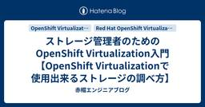
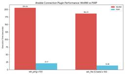
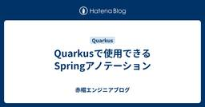
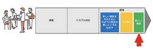
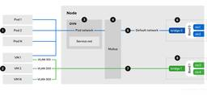
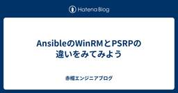
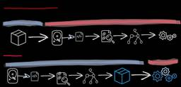
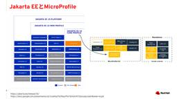
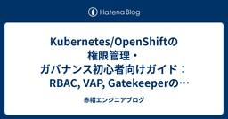

赤帽エンジニアブログ
https://rheb.hatenablog.com/
レッドハット株式会社のエンジニアがオープンソーステクノロジーについての最新の情報を発信するブログ。LinuxからOpenStack、OpenShift、Ansibleなどの情報を発信しています。
フィード
Camel kamelet
赤帽エンジニアブログ
Apache Camel Advent Calendar 14日目の記事は、サポート担当古市が担当します。 テーマは、「Camel kamelet」 昨日ご紹介した route Template をベースに、各種 camel component をコネクターとして用意し、ユーザーはコネクターを並べてサービスを定義するという kamelet が開発されました。製品提供は終了しましたが、Openshift上のオペレーター(Camel-K Operator)を使いインテグレーションのライフサイクルを制御し、ブラウザー上の GUI を使いインテグレーションの作成やデプロイなどを管理する Fuse On…
6分前

ストレージ管理者のためのOpenShift Virtualization入門【OpenShift Virtualizationで使用出来るストレージの調べ方】
赤帽エンジニアブログ
※本記事は OpenShift Virtualization アドベントカレンダーの 13日目の記事です。 qiita.com はじめに 皆さんこんにちわ、Red Hat Global Learning ServicesでLearning Solution Architectを担当している坂井 大和(@lab8010)です。 主にX.com上でRed Hat製品やサービスについて配信をしているので、もしよければフォローくださると幸いです。 この記事では、『Red Hat OpenShift Virtualizationで使えるストレージ製品ってどう調べるの？』という疑問に対して解説します。 な…
15時間前
Camel routeTemplate
赤帽エンジニアブログ
Apache Camel Advent Calendar 13日目の記事は、サポート担当古市が担当します。 テーマは、「Camel routeTemplate」 サポートでたまにあるお問い合わせには、「コード量が多くどの箇所が問題になっているかわからない。とりあえずソースコードは全て添付する。」といったものです。 開発と運用が分かれているからといった理由の他には、見本となる camel routeを複製することで業務対応しているケースもありました。(数百もの camel ルートがほぼ複製されたものといったケースも) 厳密にはリファクタリングを通して2つか 3つの camelルートへ集約すること…
1日前

BGPで経路広告したKubeVirt VMのIPアドレスに外から接続する
赤帽エンジニアブログ
OpenShift Virtualization Advent Calender 2025 12日目の記事です。 OpenShift v4.20 (もしくはv4.19.14) 以降で、CNIプラグインOVN-KubernetesがBGP対応しました。OVN-KubernetesのBGPサポートでは、 デフォルトPodネットワークのデフォルトVRFからの経路広告 プライマリネットワークとして定義したCluster User Defined NetworkのデフォルトVRFからの経路広告 プライマリネットワークとして定義したCluster User Defined NetworkをVRFを切って経…
1日前

AnsibleのWinRMとPSRPの違いをみてみよう(パフォーマンス計測編）
赤帽エンジニアブログ
こんにちは、Ansibleテクニカルサポートの八木澤（ひよこ大佐）です。この記事は、「Ansible Advent Calendar 2025」12日目の記事です。 qiita.com 前回は、「AnsibleのWinRMとPSRPの違いをみてみよう」と題して、WinRMとPSRPそれぞれのプロトコルの違いについて解説しました。ざっくり振り返ると、「WinRMは毎回プロセスを作るから重い」「PSRPはRunspace（実行空間）を使い回すから速い」 という話をしたと思います。今回は、それを踏まえて実際にPlaybookを実行した場合にどの程度差が発生するのか、実際の環境で検証していきましょう。…
1日前
JBoss EAP XP 6.0 on OpenShift ではじめる OpenTelemetry 可観測性基盤の構築 1
1
赤帽エンジニアブログ
こんにちは、Technical Account Manager (TAM) の鈴村圭史です。 前回の記事 rheb.hatenablog.com ではローカル環境（Podman）での可観測性環境の構築方法を紹介しました。今回は、OpenShift Container Platform (OCP) 上に JBoss EAP XP 6.0 と OpenTelemetry (OTEL) を連携させた可観測性基盤を構築する方法を解説します。 JBoss EAP XP 6.0 は JBoss EAP 8.1 をベースとしており、MicroProfile Telemetry 2.0 をサポートします。これ…
1日前
JBoss EAP XP 6.0 で始める OpenTelemetry (OTEL) 入門
1
赤帽エンジニアブログ
こんにちは、Technical Account Manager (TAM) の鈴村圭史です。 2025年、エンタープライズ Java 開発の現場では 「可観測性（Observability）」の重要性がこれまで以上に高まっています。 今回は、最新の Red Hat JBoss Enterprise Application Platform Expansion Pack 6.0（以下、JBoss EAP XP 6.0） を利用して、OpenTelemetry（OTEL）による可視化環境を構築する方法をハンズオン形式で紹介します。 インフラ基盤のセットアップから、JBoss EAP XP 6.0 …
1日前

Quarkusで使用できるSpringアノテーション
赤帽エンジニアブログ
Red Hat のソリューションアーキテクトの瀬戸です。 これはJakarta EE / Java EE Advent Calendar 2025の12日目の記事です。 この記事はQuarkusでのSpringアノテーションの使用を薦めるものではありません。適切にご使用ください。 と、最初に不穏な文章を書きましたが、Quarkusでは実はSpringのアノテーションや機能を一部、制限付きで使用する事ができます。 ただ、サポートされるものについてもSpringの全機能が使えるわけではありません。 例えばQuarkusのライブラリとしてquarkus-spring-diを追加する事で、Spring…
2日前
Camel Split/Aggregate
赤帽エンジニアブログ
Apache Camel Advent Calendar 12日目の記事は、サポート担当古市が担当します。 テーマは、「Camel Split/Aggregate」 既に使われている方もいらっしゃるかと思いますが、しっかりと理解して使うとパフォーマンスの向上が見込める EIP です。 Split はその名の通り、メッセージを分割して後段へ流すコンポーネントです。 camel.apache.org 気を付けるべきポイントはこちら。 分割する際、メッセージボディーを全てメモリーへ読み込むか。ストリーミングを使い逐次読み込み処理するか。 分割したメッセージを並列で処理するかどうか。 分割する際、メッ…
2日前

Virt 屋のひとりごと : High Availability の実装
赤帽エンジニアブログ
※本記事は OpenShift Virtualization アドベントカレンダーの 11 日目の記事です。 qiita.com 皆さんこんにちは、OpenShift Virtualization とストレージを生業にしている Red Hat のうつぼ（宇都宮）です。 実は私けん玉を趣味にしておりまして、休日には息子と一緒に公園でずっとけん玉してたり、イベントに行ったりしています。先月開催された KWC（Kendama World Cup）も、現地には行けなかったんですがずっと YouTube Live で観てました。 今年の KWC は昨年に続いて同郷の川本凌雅選手の二連覇になりました。別の…
2日前
Camel SEDA エンドポイント
赤帽エンジニアブログ
Apache Camel Advent Calendar 11日目の記事は、サポート担当古市が担当します。 テーマは、「Camel SEDA エンドポイント」 Camel 3.x から、従来のルーティングエンジンに加え、リアクティブエンジンが追加されました。 リアクティブに処理をするのであれば、敢えて asynchronous な処理を提供する sedaエンドポイントを使用するメリットがあるのか、改めて振り返ってみましょう。 camel.apache.org まずは、direct エンドポイントを使ったこちらのルート。 @Override public void configure() thr…
3日前

【Application Modernization | 第8回】Refactor Dev視点 なぜリファクタリングが開発スピードを決めるのか
赤帽エンジニアブログ
こんにちは。レッドハットコンサルティングチームの木嶋です。 「アプリケーションモダナイゼーション（以下、モダナイゼーション）」について解説する連載第8回目の今回からは、6Rのうちのリファクター (refactor) に焦点を当てます。 リファクターは『既存の振る舞いを保ちながら、内部構造を改善する』行為です。これ自体はユーザーに目新しいものはなにも生み出さないので、一見ただの「作り直し」に見えてしまいます。 実はこの内部構造の改善は、最終的に開発者の時間の使われ方や組織全体のコスト構造を大きく変えます。見た目以上に「経済の話」なんです。 6Rとは 本シリーズ1回目の記事をご参照ください。 シリ…
3日前
Camel による Exception/Error Handling
赤帽エンジニアブログ
Apache Camel Advent Calendar 10日目の記事は、サポート担当古市が担当します。 テーマは、「Camel による Exception/Error Handling」 基本的な使い方と componentの調べ方/試し方がわかった次に気になるのは、例外処理ではないでしょうか。 Camel を使う上で知っておくべき例外処理は、３つあります。 ErrorHandler OnException DoTry/DoCatch コミュニティードキュメントに、詳細解説があります。 camel.apache.org camel.apache.org camel.apache.org c…
4日前

OpenShift Virtualization 上の VM を 直接物理ネットワークと通信できるようにしよう !
赤帽エンジニアブログ
※本記事は OpenShift Virtualization アドベントカレンダーの 9日目の記事です。 qiita.com こんにちは、OpenShift のプリセールスを担当している山川です。OpenShift Virtualization が日本で普及することを切実に願い続けています。 OpenShift Virtualization の導入を検討いただく際、最初に突き当たる壁の一つがネットワークの設計です。 GUI も有用なのですが、今回は慣れると設定が楽で、かつより柔軟な設定が可能な Yaml を利用して設定してみたいと思います。 OpenShift をインストールしたてのクラスター…
4日前

AnsibleのWinRMとPSRPの違いをみてみよう
赤帽エンジニアブログ
こんにちは、Ansibleテクニカルサポートの八木澤（ひよこ大佐）です。この記事は、「Ansible Advent Calendar 2025」9日目の記事です。 qiita.com AnsibleでWindowsを自動化する際に、現在は以下の3つのコネクションプラグインを利用できます。 WinRM PSRP SSH おそらくWindowsに接続するうえで最も利用率が高いのはWinRMでしょう。SSHは比較的最近導入されたコネクションプラグインですが、Linuxで馴染み深い方も多いはずです。ただ、WinRMやPSRPはWindows独自のプロトコルのため「具体的に何がどう違うの？」と思っている…
5日前

Quarkusの素早い起動の秘密、ビルド時DIについて見てみる
赤帽エンジニアブログ
Red Hat のソリューションアーキテクトの瀬戸です。 これはJakarta EE / Java EE Advent Calendar 2025の9日目の記事です。 QuarkusはJBoss EAPや他のJavaアプリケーションサーバーに比べると起動が早いです。実行に必要なモジュールが少なく、最小限のリソース読み込みで起動するという事もあるのですが、もう一つ、DIをビルド時に行うからという事もあります。 DIとは DIは依存性注入（Dependency Injection）のことで、コンポーネント間の結合度を低減し、テスタビリティと保守性を向上させるために使用されています。 古くはSpri…
5日前
Camel Kafka コンポーネント
赤帽エンジニアブログ
Apache Camel Advent Calendar 9日目の記事は、サポート担当古市が担当します。 テーマは、「Camel Kafka コンポーネント」 Openshiftなどのクラウド環境では camel-kafka コンポーネントをご利用されているお客様がとても多い印象です。 クライアントや他サービスといった前段からのリクエストをルーティングするといった用途ではなく、クラウド上で生成されるログなどをルーティングする事例が増えています。 ご利用するにあたり、今回も製品ドキュメントもしくはコミュニティードキュメントを確認していただく方法を強くお勧めします。 ここでは、コミュニティードキュ…
5日前
Virt 屋のひとりごと : いろいろなディスクの種類
赤帽エンジニアブログ
※本記事は OpenShift Virtualization アドベントカレンダーの 8 日目の記事です。 qiita.com 皆さんこんにちは、OpenShift Virtualization とストレージを生業にしている Red Hat のうつぼ（宇都宮）です。 アドベントカレンダーも 1/3 くらいになって、いい具合に個人的にネタ切れ感が襲ってきました。いくらでも書くべきことや問われることはあるはずなんですが、いざ記事にしようと思うと浮かんでこない。 こないだのブラックフライデーでも、セールが始まる前には「これ今じゃなくてブラックフライデーで買おう」と何回も思ったんですが、いざセールが始…
5日前

Quarkusで使用できる非標準の標準仕様
赤帽エンジニアブログ
Red Hat のソリューションアーキテクトの瀬戸です。 これはJakarta EE / Java EE Advent Calendar 2025の8日目の記事です。 トップに前後記事へのリンクを張るのが面倒くさくなってきたので、今回から端折ります。 QuarkusはMicroPrifleを基にしたアプリケーションフレームワークです。 MicroProfileは旧Java EEのAPIを使いながらJava Alternativeとして生まれた仕様で、マイクロサービスアーキテクチャ向けにエンタープライズ Java を最適化することを目的としています。 Java EEがOracle社からEclip…
6日前
Camel File コンポーネント
赤帽エンジニアブログ
Apache Camel Advent Calendar 8日目の記事は、サポート担当古市が担当します。テーマは、「Camel File コンポーネント」 Apache Camel 1.0 から提供されている古参のコンポーネントであり、クラウドや AIなどで賑わっている昨今においても、サポート業務で度々お問い合わせを受ける人気コンポーネントの１つです。 こんな作業を検討されている方は、ぜひ camel-file コンポーネントのご利用をご検討ください。 特定ディレクトリーからファイルを定期的に読み込む 特定ディレクトリーへファイルを出力する よく聞く話では、 メインフレームとの連携にファイルを…
6日前

Kubernetes/OpenShiftの権限管理・ガバナンス初心者向けガイド：RBAC, VAP, Gatekeeperの使い分けと実機検証
赤帽エンジニアブログ
はじめに APIリクエストはどこで止められるのか？ 各コンポーネントの役割と守備範囲 RBAC (Role-Based Access Control) Validating Admission Policy (VAP) Gatekeeper Operator (OPA) 使い分けのディシジョンツリー 【実機検証】振る舞いの違いを確認する シナリオA：RBACによる「認可」の壁 シナリオB：Gatekeeperによる「ポリシー」の壁 シナリオC：VAPによる「ネイティブ・ガードレール」の壁 Gatekeeperにしかできないこと：他のリソースとの突き合わせ シナリオD：Ingressホスト名の重…
6日前
Virt 屋のひとりごと : GUI の確認ダイアログ
赤帽エンジニアブログ
※本記事は OpenShift Virtualization アドベントカレンダーの 7 日目の記事です。 qiita.com 皆さんこんにちは、OpenShift Virtualization とストレージを生業にしている Red Hat のうつぼ（宇都宮）です。 現場猫をご存知でしょうか？あの安全帽を被って指差し確認しながら「ヨシ！」とやってる例の猫のイラスト、みなさんも一度は見たことがあると思います。 この指差し確認というのは IT の世界でも馬鹿にならないもので、なぜならヒューマンエラーの原因の多くは確認不足によるものだからです。指差し確認とは体を動かすことで脳を刺激して、きちんと意識…
7日前

Debugging Camel
赤帽エンジニアブログ
Apache Camel Advent Calendar 7日目の記事は、サポート担当古市が担当します。 テーマは、「Debugging Camel」 基本的には、以下の流れで camel route のデバッグをすすめていくことをお勧めします。 Camel trace を使い、ルーティングの状況を把握 ログレベルを変更し、より詳細な情報を把握 デバッガーを使い、ソースコードレベルの調査 Camel trace 想定通りにルーティングされない場合、exchange の状態と、どの経路でルーティングされたかを把握する必要があります。 実際、製品サポートの現場でかなり大掛かりな camelルートに…
7日前
Virt 屋のひとりごと : CPUとメモリのオーバーコミット
赤帽エンジニアブログ
※本記事は OpenShift Virtualization アドベントカレンダーの 6日目の記事です。 qiita.com 皆さんこんにちは、OpenShift Virtualization とストレージを生業にしている Red Hat のうつぼ（宇都宮）です。 万物は有限です。数字や時間のような概念的な一部の例外を除けば、大抵のものには限りがあります。石油だってお金だって、ミミズやオケラやうつぼの命だって限りがあります。 そんな限りある資源をうまく使うことが私たち生を受けている者に与えられた使命なのです。 ということで今日のテーマはオーバーコミットです。 オーバーコミットの概念とリスク そ…
8日前
OVN-Kubernetesで今後実装されそうな機能(2025年度版)
赤帽エンジニアブログ
コンサルタントの織です。OpenShift Advent Calendar 2025の5日目、OVN-Kubernetesで今後実装されそうな機能(2025年度版)というタイトルの記事を書きました。OVN-KubernetesのOKEP (KubernetesにおけるKEPと同じもの) を眺めて、今後実装されるかもしれない機能をチラ見する、という内容です。 具体的には、 トラブルシュート用MCPサーバ no-overlay ClusterNetworkConnect OVS-DPDK関連 EVPN について簡単に紹介しています。詳細については以下をご覧ください。 zenn.dev
8日前

Testing Camel
赤帽エンジニアブログ
Apache Camel Advent Calendar 6日目の記事は、サポート担当古市が担当します。(鎌田さん、アドバイスありがとうございます。） テーマは、「Testing Camel」 Camel は、JUnit extension ライブラリーを提供しており、従来のテストコードと同等に Camelルート用テストコードを記述可能です。 camel.apache.org テストの粒度をこのように分けることで、テスト設計がし易くなるでしょう。 processor/Beans単位 Camelルート単位 Processor/Beans単位 例えばこのような Processor を実装したいとし…
8日前
ストレージ管理者のためのOpenShift Virtualization入門【OpenShift環境におけるストレージの基本】
赤帽エンジニアブログ
※本記事は OpenShift Virtualization アドベントカレンダーの 5日目の記事です。 qiita.com はじめに 皆さんこんにちわ、Red Hat Global Learning ServicesでLearning Solution Architectを担当している坂井 大和(@lab8010)です。 主にX.com上でRed Hat製品やサービスについて配信をしているので、もしよければフォローくださると幸いです。 この記事では、『Red Hat OpenShift Virtualization環境では、ストレージ製品ってどう使われるの？』という疑問に対して解説します。 …
8日前
Camel Route から Hello World
赤帽エンジニアブログ
Apache Camel Advent Calendar 5日目の記事は、サポート担当古市が担当します。 テーマは、「Camel Route から Hello World」 雛形作成と実行までを紹介しますが、ここでは ０から１０まで文法やオブジェクト構造を説明しません。 0からしっかりと時間をかけて学びたいという素晴らしい志を持たれた方は、こちらのリソースをご覧ください: 初日に紹介した Japan Camel User Group(JCUG)の記事 jcug-oss.github.io Community Document camel.apache.org 書籍: Camel in Acti…
9日前
JBoss EAP 8に環境変数を使って値を設定する/7以前と挙動が変わっているので注意
赤帽エンジニアブログ
Red Hat のソリューションアーキテクトの瀬戸です。 これはJakarta EE / Java EE Advent Calendar 2025の4日目の記事です。 昨日は @TTakakiyo による 記事です。(公開されたらリンクを張ります！) 明日は @megascus による Jakarta Persistence 3.2(Jakarta EE 11)で増えたJPQLの構文 - 水まんじゅう2 です。 JBoss EAP 8から環境変数の扱いが変わりました。 具体的にはstandalone.xmlなどの設定ファイルで積極的に環境変数を参照しに行くようになりました。 以前は環境変数を参…
10日前
Virt 屋のひとりごと : VM とストレージの Live migration
赤帽エンジニアブログ
※本記事は OpenShift Virtualization アドベントカレンダーの 4日目の記事です。 qiita.com 皆さんこんにちは、OpenShift Virtualization とストレージを生業にしている Red Hat のうつぼ（宇都宮）です。お久しぶりです。 OpenShift Virtualization の特命係として活動を始めてはや2年経ちますが、おかげさまで現在は過去最高の注目と期待を浴びていると感じております。誠にありがとうございます。 一方で、実案件やプロモーションなどにかまけて技術情報の発信を怠っていたなと痛感する毎日でございます。 そんなこんなでアドベント…
10日前